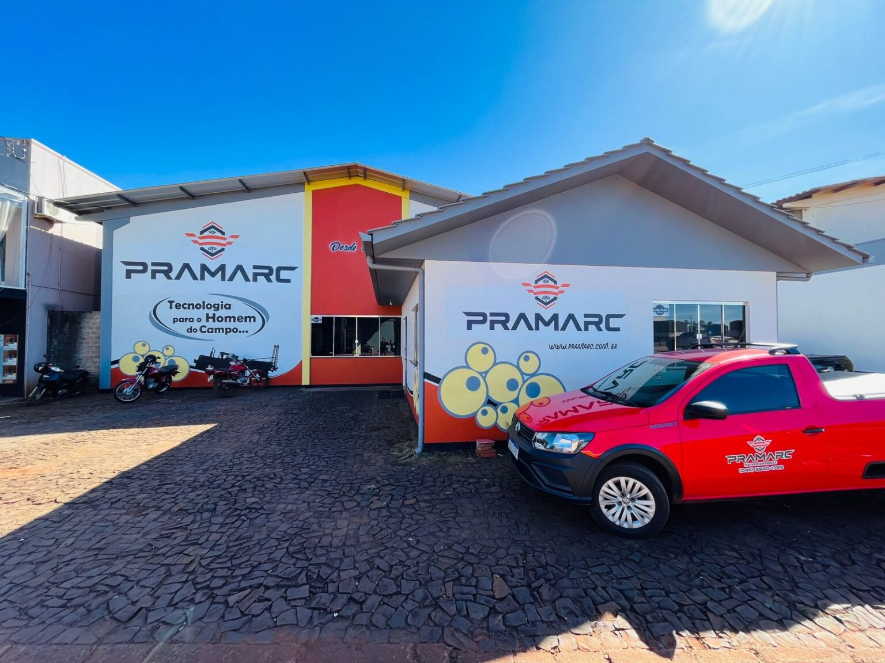

Missao
Comercializar implementos agricolas que facilitem a produtividade do homem do campo com agilidade, praticidade e qualidade.

A PRAMARC e uma empresa comprometida com seus clientes e atua ha mais de 15 anos no mercado agricola. Nosso foco e levar tecnologia, praticidade e qualidade ao homem do campo para ampliar resultados com seguranca e eficiencia.
Comercializar implementos agricolas que facilitem a produtividade do homem do campo com agilidade, praticidade e qualidade.
Ser uma empresa que leva praticidade, seguranca, tecnologia e evolucao para o campo.
Valorizar clientes, manter agilidade na negociacao e na entrega, e sustentar relacoes de confianca de longo prazo.
Rua Leonardo Giongo, 671
Bairro Industrial
Pranchita - PR
CEP: 85730-000
Telefone: (46) 3540-1789
E-mail: pramarc@pramarc.com.br
Produtos cadastrados junto aos orgaos.
Atendimento com FINAME PROGER.
Visite nossa unidade ou fale com nossa equipe para encontrar a melhor solucao para sua propriedade.
Entrar em Contato